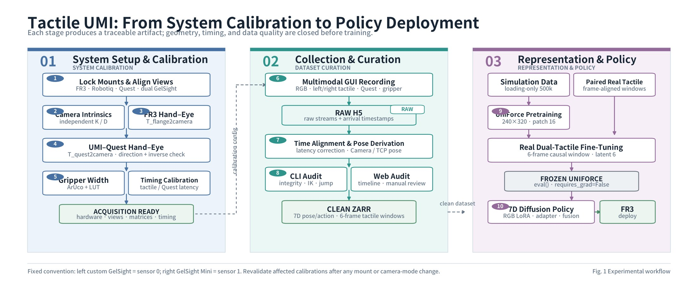
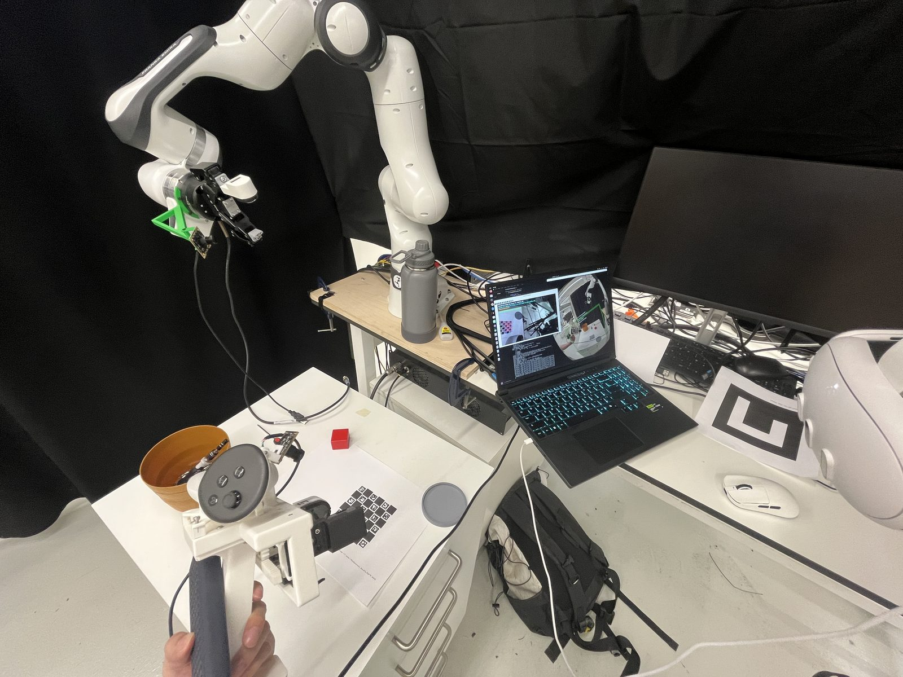
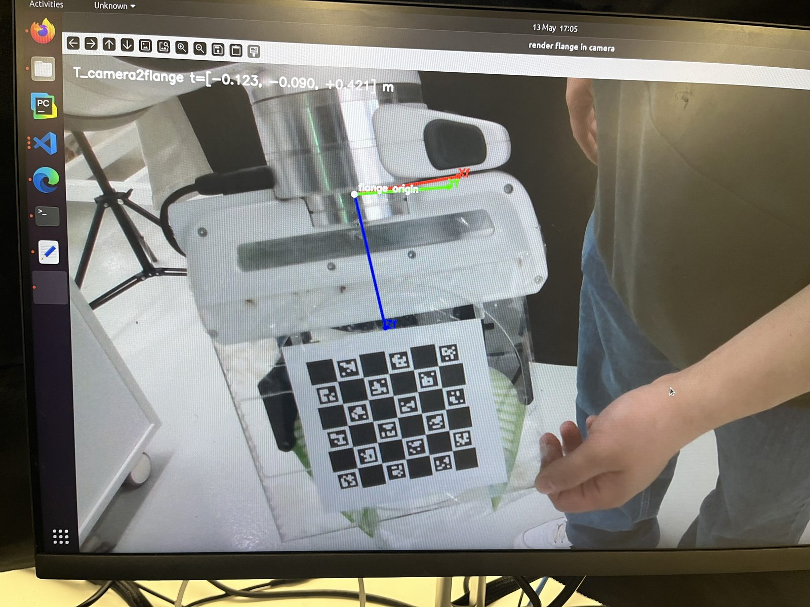
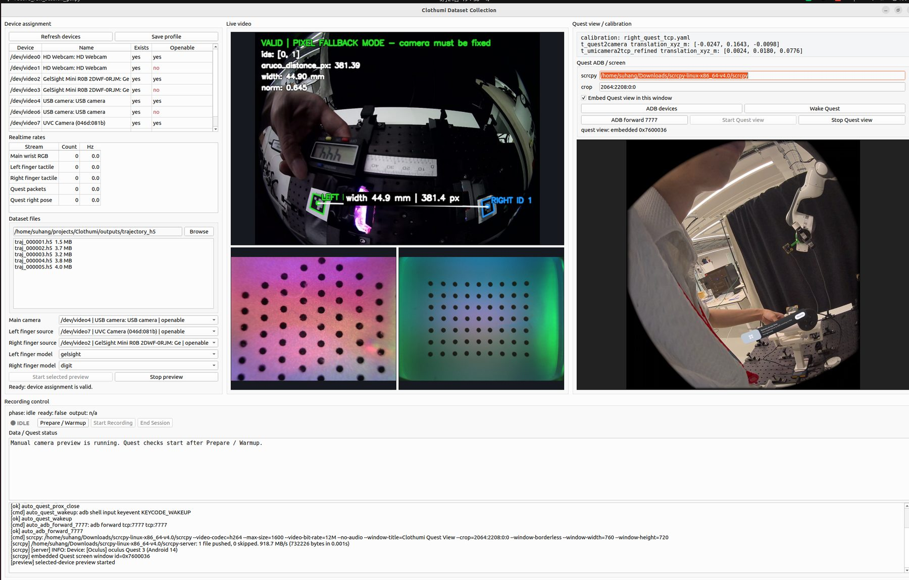
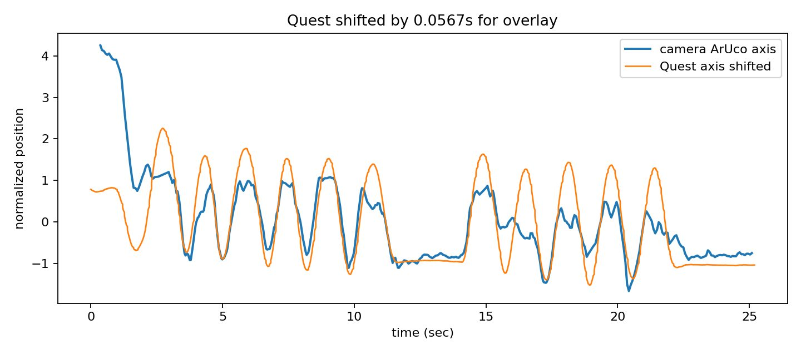
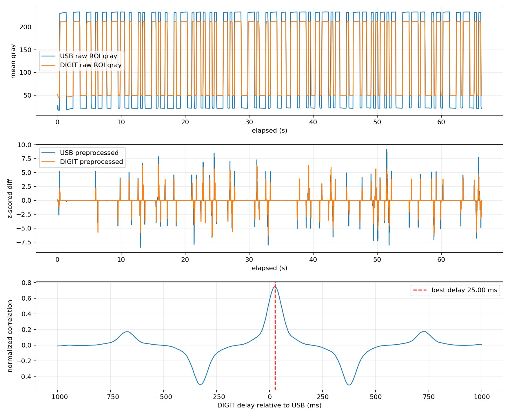
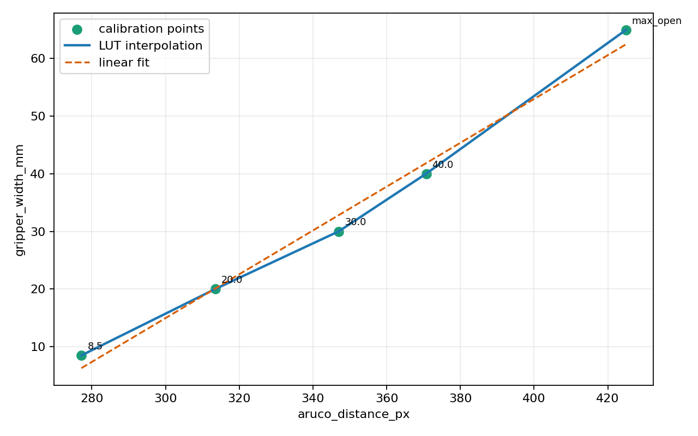

How do hand-held demonstrations with touch become calibrated, auditable data a VLA policy can actually learn from?
带触觉的手持示教，如何变成标定可靠、可审计、能真正训练 VLA 策略的数据？
The FR3 carries the same Robotiq gripper and GelSight fingertips as the hand-held UMI, so the policy sees the world the way the demonstrations did. Each rollout starts from a reset pose; the policy receives the wrist image and robot state, predicts a chunk of camera-relative actions, and the arm moves the object toward the target.
FR3 装着与手持 UMI 相同的 Robotiq 夹爪和 GelSight 指尖，所以策略看到的世界与示教时一致。每次回放从复位位姿开始；策略接收手腕图像与机器人状态，预测一段相机坐标系下的动作块，机械臂把物体移向目标。
No teleoperation, no scripted waypoints: every motion comes from π0.5 fine-tuned on 222 hand-held demonstrations.
没有遥操作，也没有预设路径点：所有动作都来自在 222 条手持示教上微调的 π0.5。
Universal Manipulation Interface (UMI) showed that a hand-held gripper with a wrist camera lets people collect robot demonstrations anywhere, far faster than teleoperation. But a wrist camera cannot tell how hard the fingers are squeezing, whether an object has started to slip, or what a cloth feels like. We added touch: two GelSight fingertips record a tactile video stream next to the RGB stream, Quest tracking supplies the 6-DoF pose, and an ArUco marker gives the gripper width.
Universal Manipulation Interface（UMI）证明了带手腕相机的手持夹爪可以让人在任何地方采集机器人示教，比遥操作快得多。但手腕相机看不出手指捏得多紧、物体是否开始打滑、一块布摸起来是什么感觉。于是我们加上了触觉：两个 GelSight 指尖在 RGB 流旁边同步记录触觉视频，Quest 追踪提供六自由度位姿，ArUco 标记给出夹爪开度。
The hard part is not the sensors but trusting them together. Four streams with four clocks and four coordinate frames have to become one robot-ready timeline, and every transformation has to be measured before it is used. We treated calibration and data quality as part of the learning system, not as hidden setup—every episode is inspectable from acquisition through alignment, curation and deployment.
难点不在传感器本身，而在于让它们一起可信。四路数据流、四个时钟、四个坐标系必须合成一条机器人可用的时间线，每一个变换在使用前都要先测出来。我们把标定和数据质量当作学习系统的一部分，而不是看不见的前置工作——每条示教从采集、对齐、筛选到部署都可以被检视。
Then the corpus split into two policy branches. My lab mate trained a tactile-conditioned Diffusion Policy; I converted the same demonstrations to LeRobot format and fine-tuned π0.5, a vision-language-action model, and deployed it on the FR3. This page covers the π0.5 branch.
随后数据被用于两条策略分支：实验室同学训练了触觉条件化的 Diffusion Policy；我把同一批示教转换成 LeRobot 格式，微调视觉-语言-动作模型 π0.5，并部署到 FR3 上。这一页介绍 π0.5 这一分支。




Every transformation is measured before it is trusted, and the measurements are kept as a ledger so they can be repeated whenever a camera or mounting changes.
每一个变换在被信任之前都要先测量，并把测量结果记录成账本，这样一旦相机或安装发生变化就可以重做。
With the camera and the Quest rigidly mounted on the UMI, the device moves in front of a stationary ArUco marker. The camera estimates the marker’s position from video and calibrated intrinsics; the Quest records the controller trajectory, transformed into the camera frame by the measured hand–eye transform. Following the one-axis alignment of exUMI, we compare normalised velocity along a matching axis and search for the scalar time offset that minimises the mean-squared error between the two signals.
相机与 Quest 刚性固定在 UMI 上，设备在一个静止的 ArUco 标记前运动。相机根据视频和标定内参估计标记位置；Quest 记录手柄轨迹，并通过测得的手眼变换转换到相机坐标系。参照 exUMI 的单轴对齐方法，我们比较同一轴上的归一化速度，搜索使两路信号均方误差最小的标量时间偏移。
The accepted run estimated −56.738 ms: the main camera trails the Quest by about 56.7 ms, so Quest timestamps are shifted later to align the streams. This is a measured value for this set-up, not a universal hardware latency—and that distinction is exactly why the ledger exists.
被接受的那次运行估计出 −56.738 ms：主相机比 Quest 晚约 56.7 ms，因此把 Quest 时间戳后移以对齐数据流。这是针对本套装置的实测值，而非通用的硬件时延——这个区别正是账本存在的意义。



Raw streams keep their native timestamps in H5; alignment and camera-relative pose derivation are reproducible post-processing steps. A command-line audit checks stream completeness, timing faults and inverse-kinematics plausibility; a web audit lets us replay any episode with all streams side by side. Only accepted trajectories are promoted to the clean Zarr dataset that training consumes.
原始流在 H5 中保留各自的时间戳；对齐与相机相对位姿的推导是可重复的后处理步骤。命令行审计检查流完整性、时序故障与逆运动学可行性；网页审计则可以把任意一条示教的所有流并排回放。只有通过审计的轨迹才会被提升到训练所用的干净 Zarr 数据集。
π0.5 is a vision-language-action model: a PaliGemma vision-language backbone with an action expert that generates action chunks by flow matching, pre-trained on large robot corpora and designed to be fine-tuned on a few hundred demonstrations. That makes it a natural match for a UMI corpus, which is exactly a few hundred demonstrations with a wrist view and a 7-D action.
π0.5 是一个视觉-语言-动作模型：PaliGemma 视觉语言骨干加上一个用流匹配生成动作块的动作专家，在大规模机器人数据上预训练，设计目标就是用几百条示教微调。这与 UMI 语料天然匹配——它正是几百条带手腕视角和 7 维动作的示教。
My branch: convert the clean Zarr corpus into LeRobot format (images, proprioceptive state, action chunks and a natural-language task prompt per episode), compute the normalisation statistics, fine-tune π0.5 with LoRA on a single GPU using the openpi stack, and serve the policy to the FR3 over a websocket inference server. At run time the policy receives the wrist image and robot state, predicts a 50-step chunk of camera-relative 7-D actions, and the controller converts them through inverse kinematics into joint commands. Rollouts were scored live with a success counter.
我的分支：把干净的 Zarr 语料转换成 LeRobot 格式（每条示教包含图像、本体状态、动作块和一条自然语言任务指令），计算归一化统计量，用 openpi 在单卡上以 LoRA 微调 π0.5，再通过 websocket 推理服务器把策略提供给 FR3。运行时策略接收手腕图像与机器人状态，预测 50 步相机相对的 7 维动作块，控制器经逆运动学转换为关节指令。实机回放用成功计数器实时记录。
Running a VLA and a Diffusion Policy on one calibrated corpus is what makes the two branches comparable. On the Diffusion Policy side, vision-only scored 10/34 and the tactile-conditioned version 14/34 on the contact task; the π0.5 rollouts show that the same data pipeline produces trajectories a modern VLA can learn from and execute on the real FR3.
在同一套标定过的语料上同时跑 VLA 和 Diffusion Policy，才让两条分支可以互相比较。Diffusion Policy 那边，纯视觉版本在接触任务上 10/34，触觉条件化版本 14/34；π0.5 的真机回放则表明同一条数据流水线产出的轨迹，现代 VLA 可以学会并在真实 FR3 上执行。